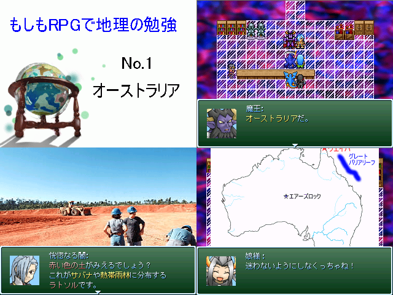

| No,028 【もしも地理で地理の勉強 No.1 オーストラリア】 |
| ダウンロード（2.65MB） 修正ファイル（49.4KB） 2006/12/30 16:50 |
 |
| 【ＨＮ】 QandX◆YSP12i297k 【コメント】 いつもはMIDIばっか作ってるんで、ツクールに挑戦しようかなと。 ツクール初作品だというのに、いきなり送ろうという無礼者です。 VIPRPGスレには受験生もいるはず。 センター試験にでも役に立ててください。 前述のように、初心者のため、つくりはかなり甘いです。 目的は「もしもキャラで楽しく地理を学ぶ」というところにありますので、 技術的な面では本当にご容赦ください。 |
| 【管理人コメント】 これはいいお勉強ゲーム 受験生も大助かり！ |